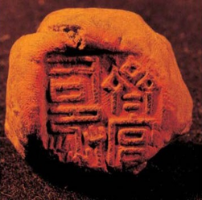

The History of Biometrics
Biometrics have been used for thousands of years to authenticate the identity of a person.
There have been traces found throughout history. During the reign of the Babylonian empire
ranging from 2300 B.C. - 539 B.C.,Babylonians used fingerprints on clay tablets for
business transactions.
In ancient China, biometrics was useful in that it maintained law and order due to the large population.
During the Qin and Han Dynasties in years 206 B.C.-589 C.E, fingerprints would be used as an identifier.
The Qin Dynasty used fingerprints for important documents to keep them secure. They used a clay seal
with a monogram on one side and a fingerprint on the other.